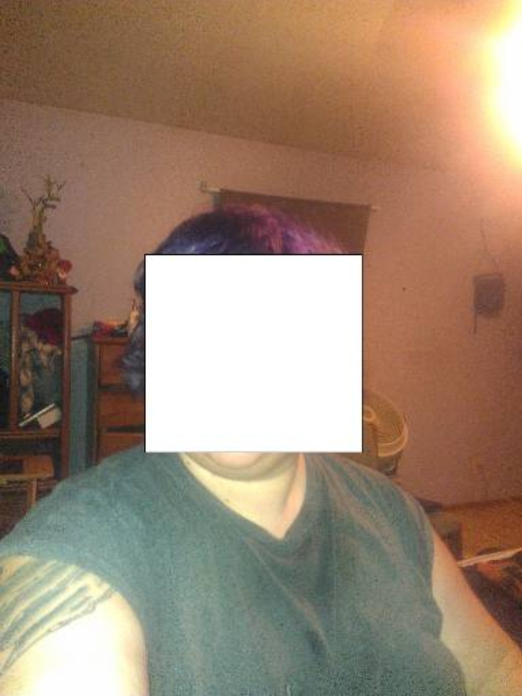
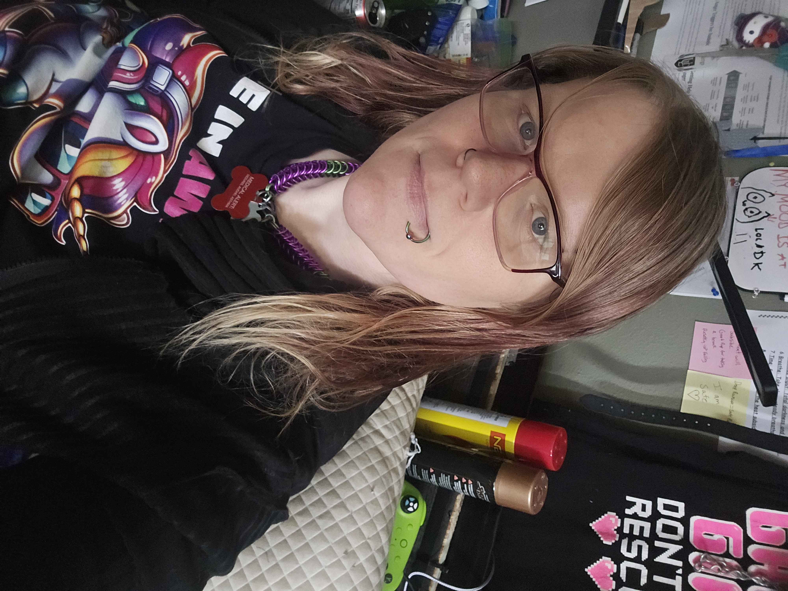
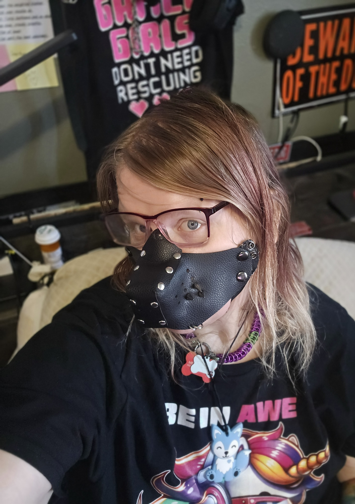

Literal Thinking | Technical Precision
I am a highly detail-oriented professional with a unique cognitive profile that favors pattern recognition, literal interpretation, and technical consistency.
As a neurodivergent individual, I possess a 'sensory superpower' for identifying subtle inconsistencies and logical glitches that others often overlook.